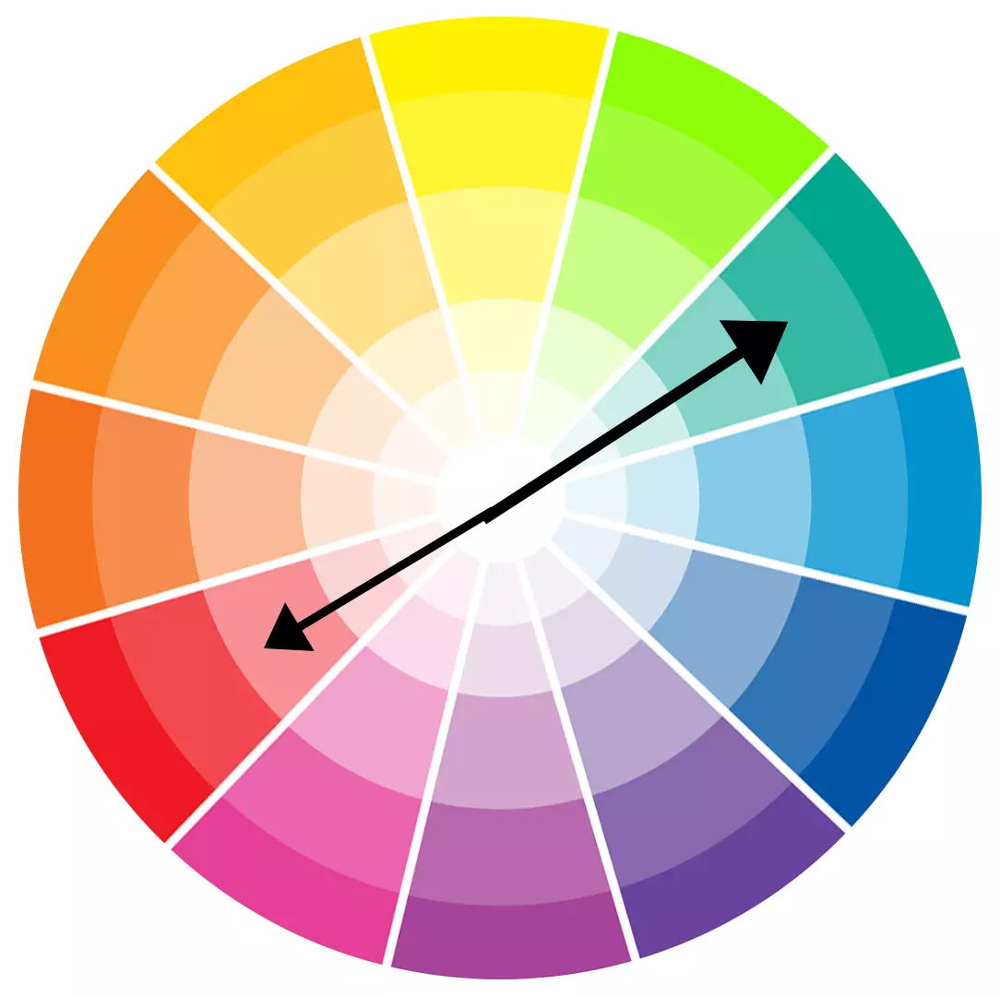

O círculo de cores apresenta as sete cores básicas do espectro e suas variantes. São ao todo doze cores (três primárias, três secundárias e seis terciárias):
|
| Desse modo, as denominadas cores complementares são aquelas que juntas formam tonalidades de cinza e apresentam maior contraste entre si. |
| Ao visualizar o círculo cromático, podemos identificar a cor complementar, pois elas estão localizadas nas extremidades opostas às cores primárias. |
| Assim, são complementares as cores: |
|
|

| Há outras classificações para as cores, segundo às tonalidades e a transmissão de sensações, denominada de “temperatura das cores”, a saber: |
|
A síntese aditiva também pode ser chamada de sistema RGB (do inglês red, green e blue), sendo bastante utilizado em equipamentos eletrônicos que possuem telas onde imagens são transmitidas. |
|